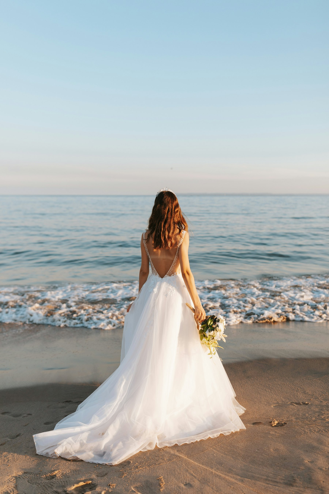
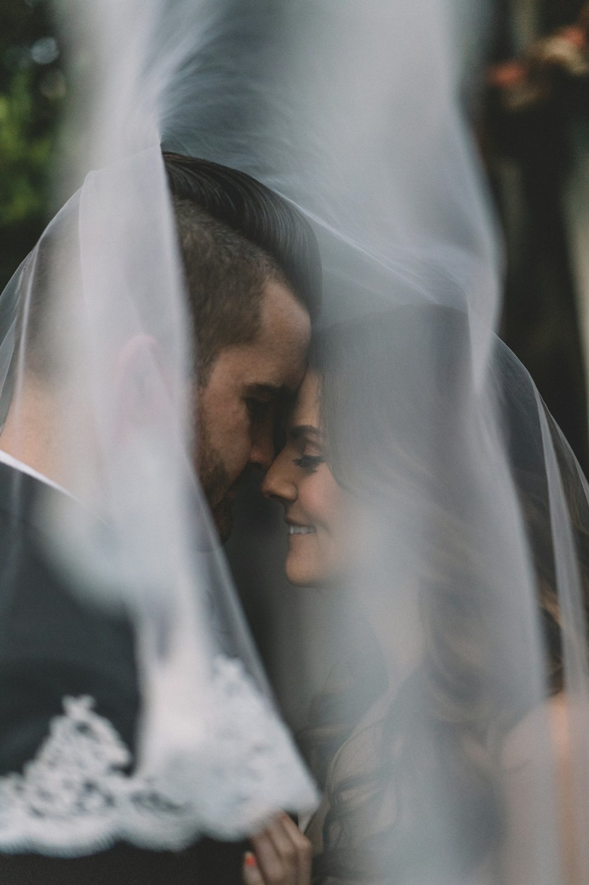
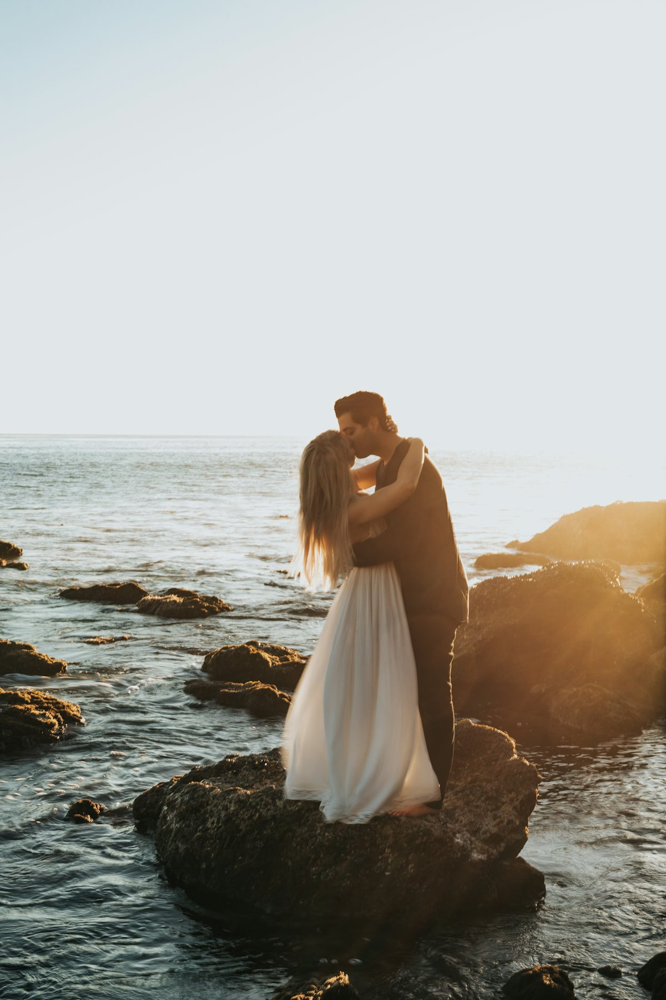
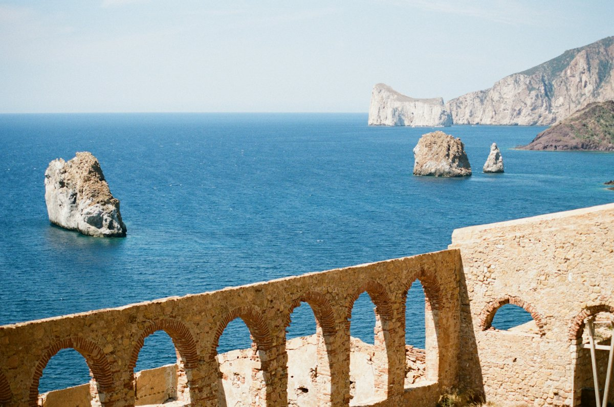
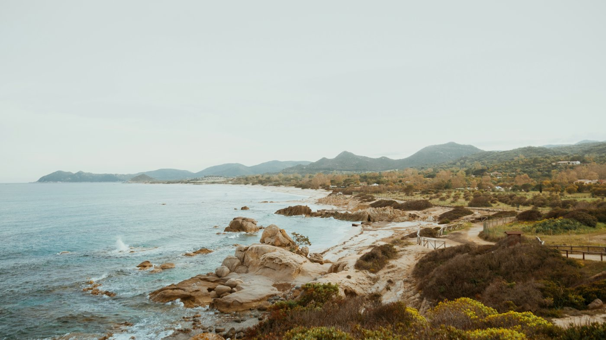
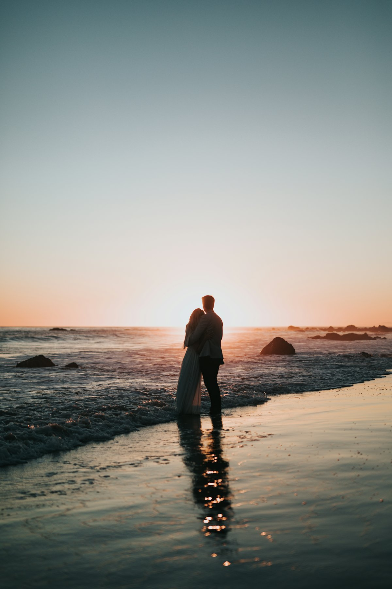
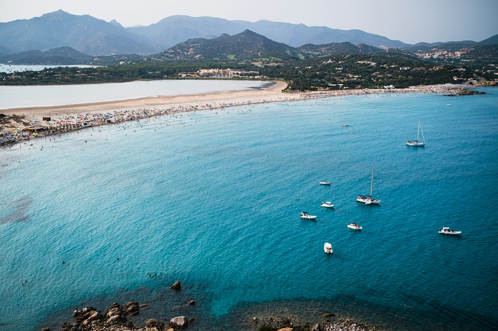

09:30I preparativi
12:15Sotto il velo
13:30Al mare, in stile reportage
15:00Il ricevimento
18:40Dal drone, sulla costa
20:10Il tramontoGli sposi lo chiedono come prima cosa. Qui lo vedono da soli: ogni giorno mostra quante squadre restano, e la richiesta parte con data, zona e servizi già scritti.
Fotografi e videomaker che lavorano insieme da anni, con Carlo Soro, fotografo di matrimoni da circa vent'anni e operatore drone certificato ENAC dal 2016.
